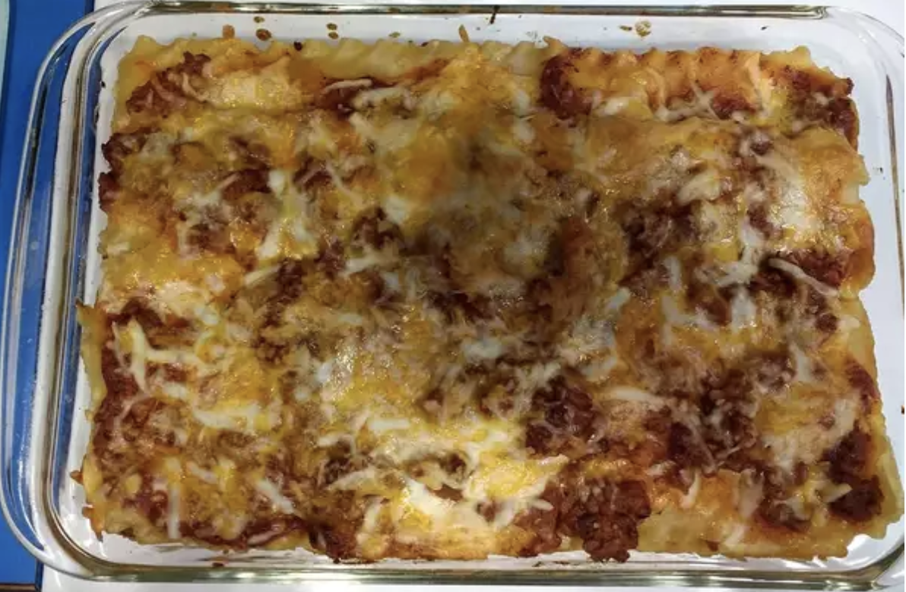

Lasagna

A great and easy recipe for homemade lasagna!
" Very good lasagna! My husband & I enjoyed it very much. I made a few changes,
I used ground turkey instead of ground beef and also used Barilla lasagna oven
ready-no boil noodles.I then added sliced mushrooms and shredded parmesan cheese.
This recipe was very fast & easy to make! I'd recommend this to anyone.
This one is definetly a keeper!"
"Good basic recipe, just needs a little oomph."
Ingredients:
- 1 (16 ounce) package lasagna noodles
- 1 pound lean ground beef
- salt and pepper to taste
- 1 (16 ounce) jar spaghetti sauce
- 1 clove garlic, minced
- ½ pound shredded mozzarella cheese
- ½ pound shredded Cheddar cheese
- 1 pint ricotta cheese
Steps:
- Step 1: Bring a large pot of lightly salted water to a boil. Add pasta and cook for 8 to 10 minutes or until al dente; drain.
- Step 2: Preheat oven to 350 degrees F (175 degrees C). In a large skillet over medium-high heat, brown beef and season with salt and pepper; drain. Stir in spaghetti sauce and garlic and simmer 5 minutes.
- Step 3: In a medium bowl, combine mozzarella, Cheddar and ricotta; stir well. In 9x13 inch pan, alternate layers of noodles, meat mixture and cheese mixture until pan is filled.
- Step 4: Bake in preheated oven for 30 minutes, or until cheese is melted and bubbly.